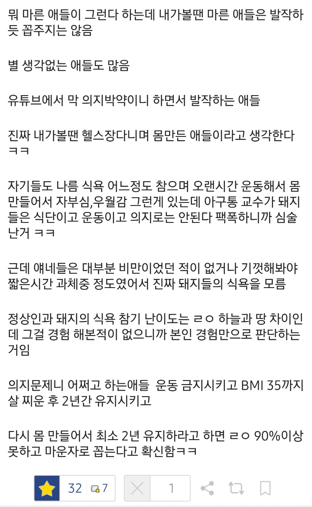
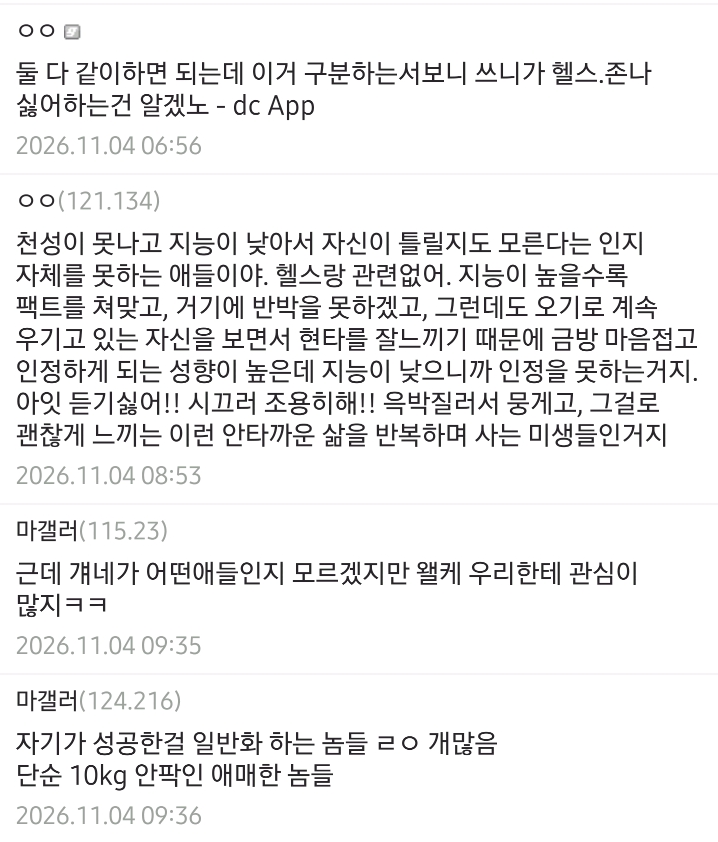

헬스하는 애들은 살빼려고 헬스하는게 아님
운동 안해본 놈이 그냥 선무당짓하는거 ㅋㅋㅋㅋㅋ
ㄹㅇㅋㅋㅋㅋㅋㅋ 헬스해서 몸만든 애들이 마운자로로 뺀 몸을 부러워할줄 아네
그런 몸 될까봐 중독이라는 비아냥 들으면서 매일 헬스장 가는건데
그럼 성욕 강한 사람은 매일매일 원나잇 하고 다녀도 걸레소리 안들어도 되는거고
수면욕 강한 사람은 매일매일 12시간씩 쳐 자면서 폐인생활해도 게으르단 소리 안들어도 되는거임?
어차피 다 호르몬,유전자 때문이잖아 ㅋㅋㅋㅋㅋ 유독 3대 욕구에서 식욕에만 존나게 관대하네 ㅋㅋㅋㅋ
관대하지 않아서 치료하려고 약맞는건데 뭔소리함
돼지인게 싫어서 존나게 싫어서 고통받다가 치료제나와서 쓴다는데
내가 돼지한테 관대하다함? 식욕에 관대하단 말이 헷갈렸나봄
성욕 못이기면 변태새끼 되는거고 수면욕 못이기고 맨날 쳐 자기만하면 게으르네 노력안하네 소리 듣는게 당연한데 쟤네들은 전부 호르몬 탓하면서 식욕은 못이기는게 당연하다는듯이 말하잖아?
질병이니까 약 먹으라고 ㅇㅇ 근데 좆도 노력해본적도 없고 배민 딸깍 거리는 돼지들이 노력이라도 해본 사람들 사이에 숨어서 질병 방패삼아 자기 합리화 하지 말란거임
돼지소리 ㅈㄴ 들었는데 머라노;
진정해ㅋㅋ
하루에 12시간 자면 진짜 우울증 같은 거 있을 듯
그리고 다른 사람한테 함부로 걸레 같은 말 하면 안돼요 개붕군~
너도 분노 조절 관련해서 무슨 문제있는 거 아냐?!
말귀 못알아듣고 아닌척 살살 긁으면서 진정하라는 개붕군도 너무 이지적이고 멋있다 ㅎㅎ 많이 먹어~
비만인의 식욕은 조절이 힘들어진 상태고 성욕 수면욕은 일반인 기준으로 대고있잖아
수면욕도 기면증 걸린 사람이라면 치료를 받겠지?
성욕도 일상생활에 지장을 줄 정도로 지나치면 치료를 받아야겠지?
이거랑 마찬가지로 비만인도 식욕을 조절못하니까 치료가 필요한거지
살살 긁는 거 아니고 대놓고 뭐라하는 거야~
다른 사람들이 식욕에만 관대한 게 아니고 네가 모든 경우에 너무 편협한 거
그리고 미안한데 나 살찌기는 커녕 통통했던 적도 없다~
비만의 식욕을 수면욕, 성욕에 비교할거면 기면증이나 성도착증 정도에 비교해야하는거 아니냐. 이 둘 다 노력으로 안되니 치료받고 약 먹잖아
계속 똑같은 얘기 하지만 다른거보다 조롱의 대상이 자신이 되니깐 자꾸 저런글 올라온다고 생각함 ㅋㅋㅋ
아무도 관심없는데 피해의식 아니야? 실제로 발작한다고?
실제로 그러는 놈들이 너무 많아서 아구창교수님이 되어버리심ㅠ
갈길 가시라아악!
정성과 노력으로 다이어트 했어도 10-15 kg 정도면 대부분 5-10년 이내 조금씩 원복되기 쉬움. 그게 문제..
5년이상 유지하면 원복안될가능성이높음
단 여기서 감량은 근육은 유지하면서 체지방만 빼야함
난 70키로에서 굳어서 몸무게가 안바뀜
여기가 세트포인트인가봐
25kg빼고 5년차 유지중
운동하는거 취미, 습관들여놓으니까 솔직히 유지할만한데 평생 할 수 있을지는 몰?루
왜 호랑이로 태어나서 고양이로 살려고 하십니까
마운자로 개새기때문에 유청값 ㅈㄴ 올라서 빡치긴함
이걸 마운자로랑 운동을 둘 중에 하나 선택하는 걸로 생각하는 애들이 있는데
당연히 마운자로 하면 운동도 해야하는거라고
걍 아구통이 정신적 교주임. 지금까지 밖에서 의지박약, 게으름 으로 평생 공격받다가 당신들의 죄가 아니며 모든것은 호르몬 때문이니라 해버리니 추앙할수밖에. 본인들 영역 반대사람들은 과학적 연구를 호도하는 자들, 서울 의대교수 권위에 반하는 자들 , 현대의학 최첨단 바깥에 있는 유사 의학 뭐 그런게 됨
근데 과학의 반대에 있는 사람은 유사 의학이잖아. 아구통 박사 등장이전에도 비만은 질병으로 국제적으로 규정 지었는데. 그 당시에는 약이 없었는데 지금은 약이 생겼을뿐이고.
근데 기존에도 질병 때문에 뚱뚱해도 존나 쳐맞던 거 생각하면 오히려 중간 되는 거 아님?
약맞으면서 아구통 빠는건 뭐 그럴수있음
근데 안맞으면서 정신승리하는건 이해안감;
마운자로도 맞으면서 헬스함ㅋㅋㅋㅋㅋ
자의로 금딸 일주일도 못하는 새끼들이 의지타령 하는거 보면 저지능도 장애로 인정해야 될 거 같음
의외로 헬스하는 사람 아닐수도있음
보디빌더들 의지력약해서 에페꼽으며 운동하고(그 에페아님)
레타트루타이드꼽으며 다이어트하는데
네츄럴조차 도움되는 성분 가루들 다 타먹는게 헬창들임
약의 중요성을 누구보다 잘아는놈들임
나도 체지방3%까지 빼보고 한달에 10kg까지 커팅 해봤는데
한번 100kg찍고 몸 망가지니 안빠짐
2400kcal먹어도안빠짐 운동하도안빠짐
근육량 45kg이라 적은것도아니고 운동도 매일하는데 안빠짐
원래 마른애들이(잘먹으면서 마른애들이) 젤많이놀리고
헬스하는 애들은 안놀려...
먼소리야 위고비 마운자로 나오고 잴 좋아한 애들이 식단하면서 운동하던 애들인데
둘 다 하면 됨 ㅇㅇ
헬스하는 사람들은 알고 있음
운동 멈추는 순간 예전 몸으로 돌아간다는것을
돼지던 멸치던..
그래서 계속 하는거임.
운동하기 존나 싫어도 여지껏 해온게 아까워서 그냥 하는거임
비만도 똑같음
운동 멈추면 예전 몸으로 돌아가는게 당연한거임
근데 이걸 말해주면 요요는 어쩔 수 없는 불가항력인 현상이라며 거품물고 돼지 혐오자라고 낙인 찍더라
다 좆까는 소리고 그냥
돼지새끼들은 마운자로든 위고비든 헬스든 러닝이든 절식이든 뭘 해서라도 살을 빼라고
라면좋아 병장에서 전역후 체지방 10%까지 빼봤는데 주6일 운동간듯 ㅋㅋㅋ 지금은 이렇게 못함
솔직히 지랄인게 우리나라만 남성비만율 여성에비해 2배임. 유전자 합리화도 못해 이건
그냥 맞는애들 맞게 두면 되는데 뭐가 그리 심술나서 논쟁나고 싸움나는지 참 신기하긴해
헬스장 게이인데 제법 뚱땡이들 오면 걍 위고비 마운자로 좋으니까 알아보라고 권해줌
어차피 정제탄수화물 중독인 경우는 헬스 해봐야 의미없거든
오히려 운동 조금 한걸로 스스로 대견해하고 더 먹을까봐 걱정됨
소아비만 출신이고 중학생 이후로 세자릿수였다가122》72 지금 유지중인데 명절에 본가가면 8키로씩 쪄온다 유전 맞음
이게 맞음
내가 뭐 참을성이 없어서 돼지된줄 아냐? 니네 5먹고싶은거 2참고 3먹을때
우리는 10 먹고싶은거 4참고 6먹음
우리가 더 많이 참았고 많이 고통스러웠어
근데 이거랑 별개로 운동은 하긴 해야되 특히 웨이트는
의지말하는 애들 전부다 내 주변도르임 하다못해 본인이 비만탈출한 애들은 ㅈㄴ 빡세다고 하는데 의지가 중요하다고 하는 애들은 내 이야기도 아니고 특별한 케이스인 남 업적 가져와서 가능한데? 이러네
ㅋㅋㅋ 이러니 아구통 날려버리고 싶다는 이야기가 나오지
아구통 교수님이 진짜 비만인 출신에 논문도 다 스캔해서 반박하니깐 다 사라지는거 같음 ㅋㅋㅋ
한번 맞아보고 싶은데 끊으면 원복된다고 해서 그럼 왜 맞지..싶어서...
끊으면 원복 되는 이유는 위고자로 맞을때 먹던 양이랑 끊으면서 먹는양이 원래대로 돌아와서임
끊은 후에도 적게 먹으면 유지 가능하고 그걸 못 하겠으면 영원히 맞으라는것
논문을 가져와도 암튼 의지면 됨 내 주변은 했다(나는 아님), 그래서 님 비만 경험해봤어요? 아뇨? 저는 평생 정상체중인데요? ㅋㅋㅋㅋ